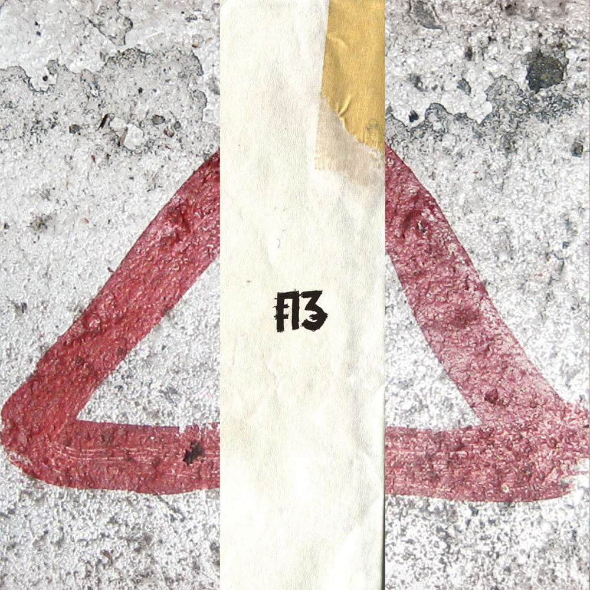

3ח
אדם/קבוצה

עטיפת האלבום של 3ח
3ח הייתה להקת רוק אלטרנטיבי, עם השפעות של נויז רוק ופוסט פאנק. רן סלוין ודודיק אופנהיים היו מיוצאי להקת הפאנק הירושלמית חולירע, מהלקות הפאנק הראשונות בארץ. הם צירפו אליהם את ראם הראובני בבס והחלו להופיע בפרגוד ב־1988, ביוזמתו של גבריאל בן-חורין מלהקת ישראל שרצה להביא למועדון הופעות של להקות רוק עכשוויות. מאז הופיעה בפרגוד רבות יחד עם נושאי המגבעת וישראל, וחבריה השתתפו בג'אמים המסורתיים של ימי שישי, ששינו את פניהם מג'אז לאלתורים ניסיוניים לכיוון הנויז. בהמשך החלו לשלב בהופעותיהם ובהקלטות לאלבומם הראשון אלמנטים אלקטרוניים כגון שימוש בטייפים.
הלהקה הופיעה גם בחו"ל, לדוגמה בגלריה בגרמניה שבה השתתפו סלוין ואופנהיים בתערוכה; למעשה לאחר הלהקה הקריירות של השניים המשיכו בעיקר בתחום האמנות. ב־1991 יצא אלבומה היחיד של הלהקה, שיצא בהוצאה מחודשת בלייבל של אוגנדה ב־2009 עם קטעי בונוס. הם החלו לעבוד על חומרים חדשים בעברית, שרבים מהם נכתבו הפעם על ידי הראובני (רובו של האלבום הושר באנגלית), אך הלהקה התפרקה ב־1992.
מאז רן סלוין ממשיך לעסוק במוזיקה והוציא מספר אלבומים של מוזיקה אלקטרונית, וכן באמנות, בעיקר וידיאו ארט. בשנות ה־90 הקים את להקת ריר בה היה חבר גם אדם הורוביץ מנושאי המגבעת. גם דודיק אופנהיים עוסק באמנות בימינו, וחבר במספר הרכבי ופרוייקטי נויז ואקספרימנטל, ביניהם Cadaver Eyes עם ערן זקס וברברה עם ראם הראובני.
פוסטרים להופעות של 3ח בפרגוד, 1989